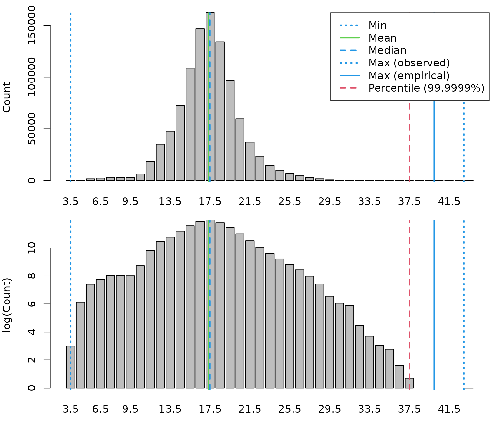
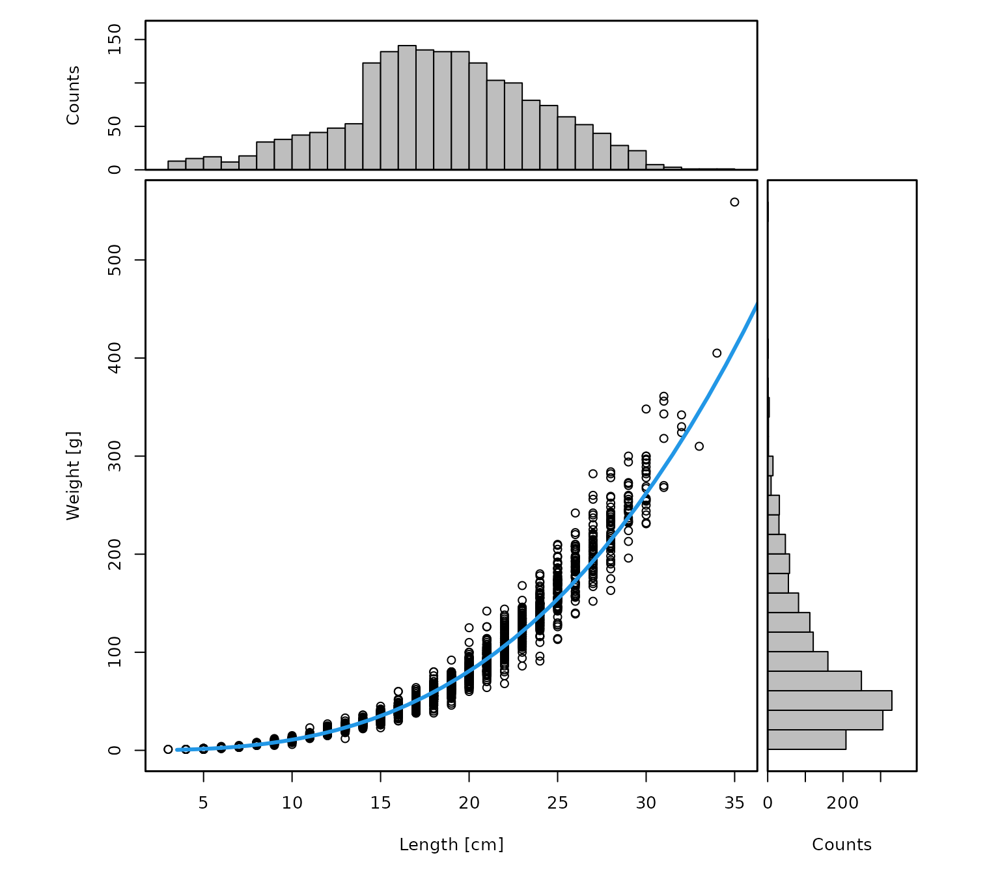
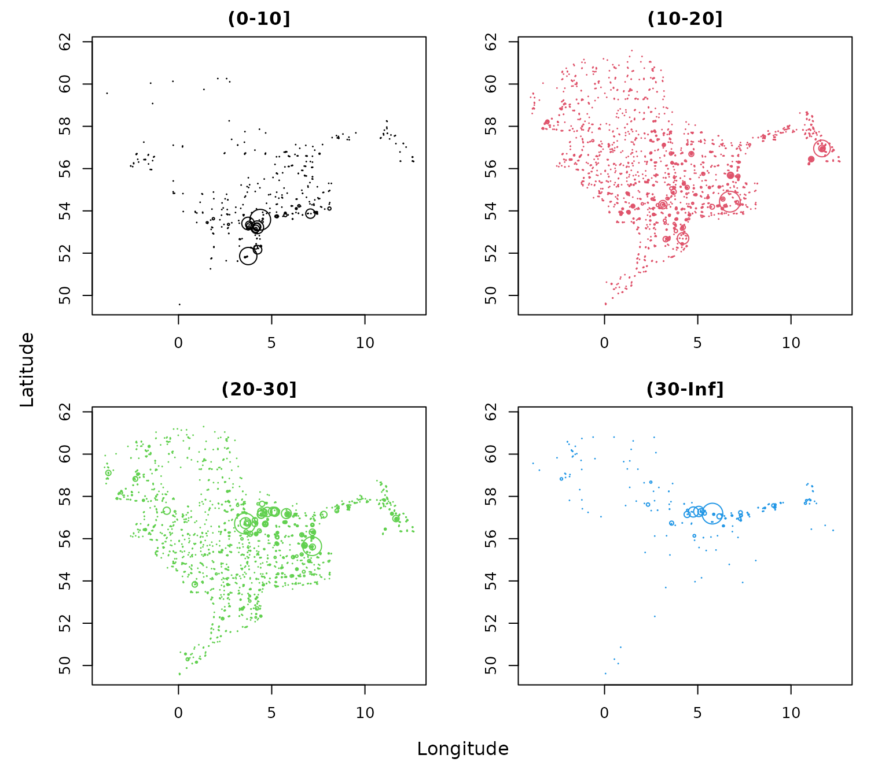

Numbers and weight by haul and length classes
by_length.RmdThe goal of this vignette is to demonstrate how to derive numbers and weight by haul and length classes based on the DATRAS database. This requires following steps:
Outline:
- Create length spectrum
- Create weight spectrum
- Aggregated length classes
- Summary
- References
The vignette uses the the DATRASextra package:
library(DATRASextra)and assumes that a cleaned DATRAS database is available (see tutorial vignette) for information on how to get a cleaned DATRAS file. Here, we use the
data("dab")Create length spectrum
lpars <- checkLength(dab)
#> [1] "Length statistics:"
#> min mean median maxObs maxEmp perc
#> 99.9999% 3 17.36 17.5 43 40 37.5
#> [1] "Observations above:"
#> maxLEmp percL
#> Numbers 1e+00 1e+00
#> Percent 1e-04 1e-04
dab <- addSpectrum(dab)Alternatively, custom length breaks with e.g. maximum length threshold:
l.cut.off <- lpars$lPars$median * 5 ## find good cut-off
## or l.cut.off <- lpars$lPars$perc
cm.breaks <- attr(lpars$N,"cm.breaks")
nbyl <- colSums(lpars$N)[which(cm.breaks <= l.cut.off)]
threshold <- cm.breaks[max(which(nbyl != 0))]
## add length data with custom breaks
by <- DATRAS:::getAccuracyCM(dab)
cm.breaks <- seq(lpars$lPars$min, threshold + by, by = by)
LngtCode2cm <- c(. = 0.1, `0` = 0.5, `1` = 1, `2` = 2, `5` = 5)
while (length(cm.breaks) > 100 && which(by == LngtCode2cm) != length(LngtCode2cm)) {
by <- LngtCode2cm[which(by == LngtCode2cm) + 1]
cm.breaks <- seq(lpars$lPars$min, threshold + by, by = by)
}
dab <- addSpectrum(dab, cm.breaks = cm.breaks, by = by)Create weight spectrum
wpars <- checkWeight(dab)
#> [1] "Length statistics:"
#> min mean median max
#> 1 3 18.94 19 35
#> [1] "Weight statistics:"
#> min mean median max
#> 1 1 85.93 66 559
#> [1] "Estimated LW parameters:"
#> [1] "a = 0.014 b = 2.903"
#> [1] "Empirical LW parameters:"
#> [1] "a = 0.007 b = 3.14"
dab <- addWeight(dab, maxL = threshold)Alteratively, …
# dab <- addWeightEmpirical(dab)Aggregated length classes
If for example only 2 or 3 length classes: ….
cuts <- c(0, 10, 20, 30, Inf)
by <- diff(attr(dab, "cm.breaks"))
midL <- attr(dab, "cm.breaks")[-length(attr(dab, "cm.breaks"))] + by/2
ind <- as.integer(cut(midL, cuts, right = TRUE, include.lowest = TRUE))
nbins <- length(cuts) - 1
nNew <- wNew <- matrix(0, nrow = nrow(dab$N), ncol = nbins)
for (j in seq_len(nbins)) {
cols.in.bin <- which(ind == j)
if (length(cols.in.bin) > 0) {
nNew[, j] <- rowSums(dab$N[, cols.in.bin, drop = FALSE])
wNew[, j] <- rowSums(dab$Wgt[, cols.in.bin, drop = FALSE])
}
}
colnames(nNew) <- colnames(wNew) <- paste0("(",cuts[-length(cuts)], "-", cuts[-1],"]")
dab$HaulN <- nNew
dab$HaulWgt <- wNewPlot:
par(mfrow = n2mfrow(ncol(nNew), asp = 2),
mar = c(3,3,2,2), oma = c(2,2,0,0))
for (i in 1:ncol(nNew)) {
plot(dab[[2]]$lon, dab[[2]]$lat,
ty = "n",
xlab = "", ylab = "",
main = colnames(dab[[2]]$HaulN)[i])
ind <- which(dab[[2]]$HaulN[,i] > 0)
points(dab[[2]]$lon[ind], dab[[2]]$lat[ind],
cex = dab[[2]]$HaulN[,i][ind] /
max(dab[[2]]$HaulN[,i][ind]) * 3,
col = i)
}
mtext("Longitude", 1, outer = TRUE)
mtext("Latitude", 2, outer = TRUE)